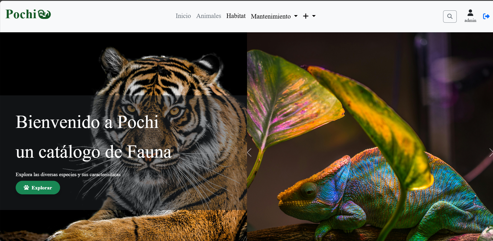
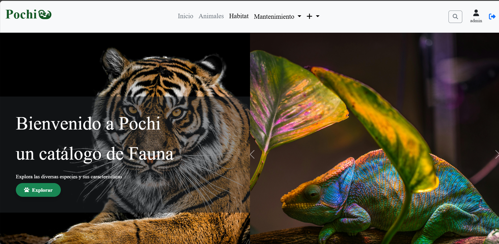

Experiencia en proyectos educativos
Desarrollo de un sistema de biblioteca
- Desarrollo de funcionalidades en php, para la administración de una biblioteca
- Implementación de mejoras en base de datos MySQL.
- Colaboración en equipo para el desarrollo del sistema.